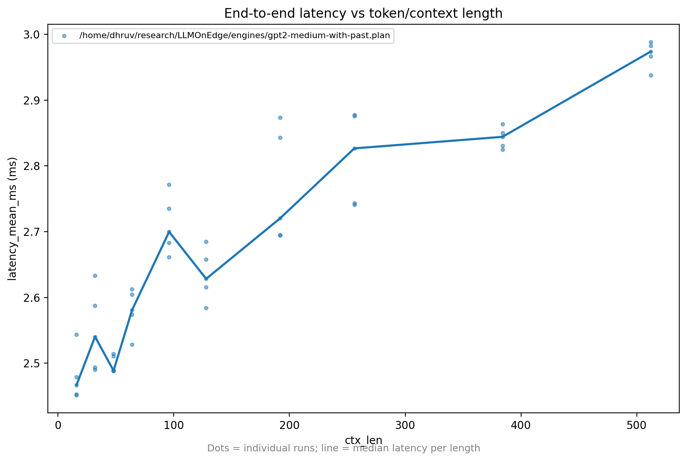
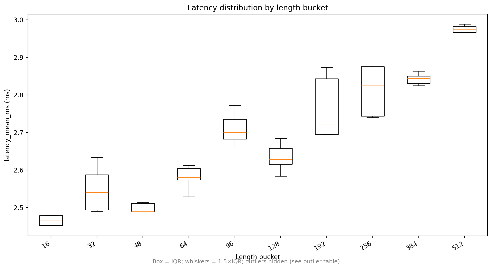
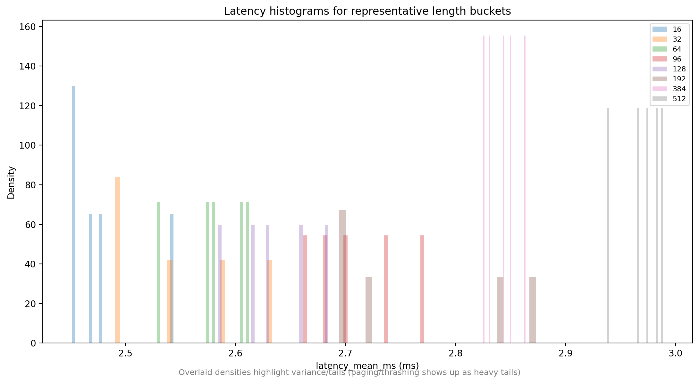
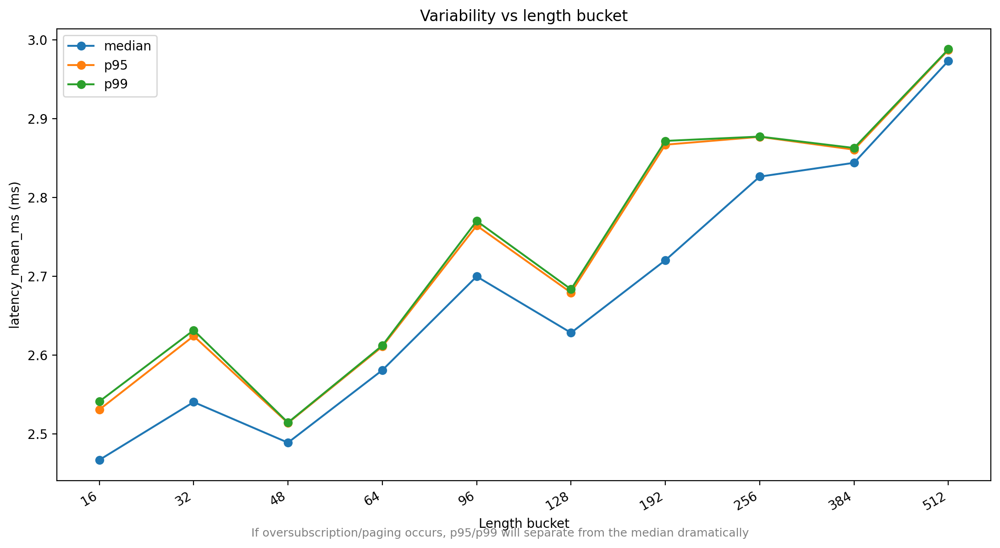
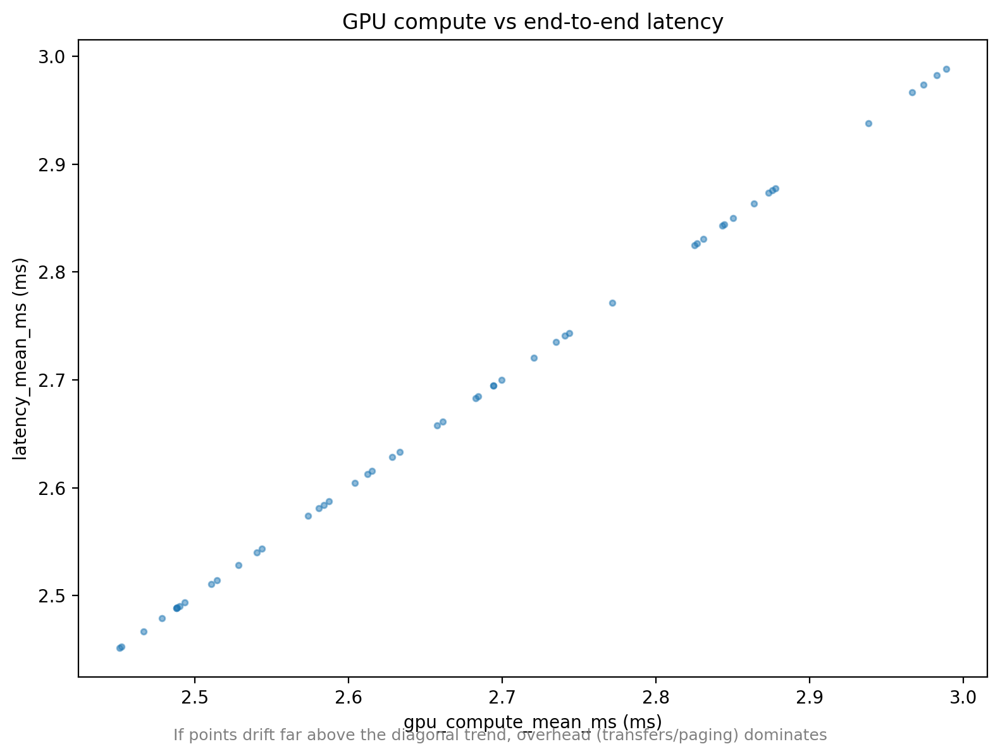
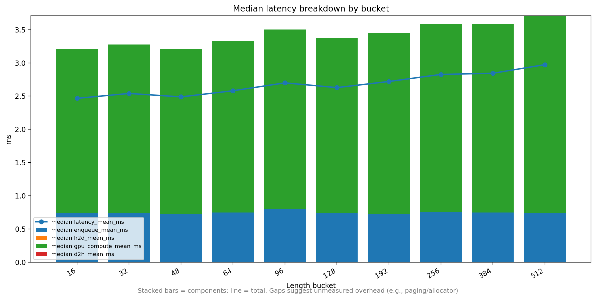
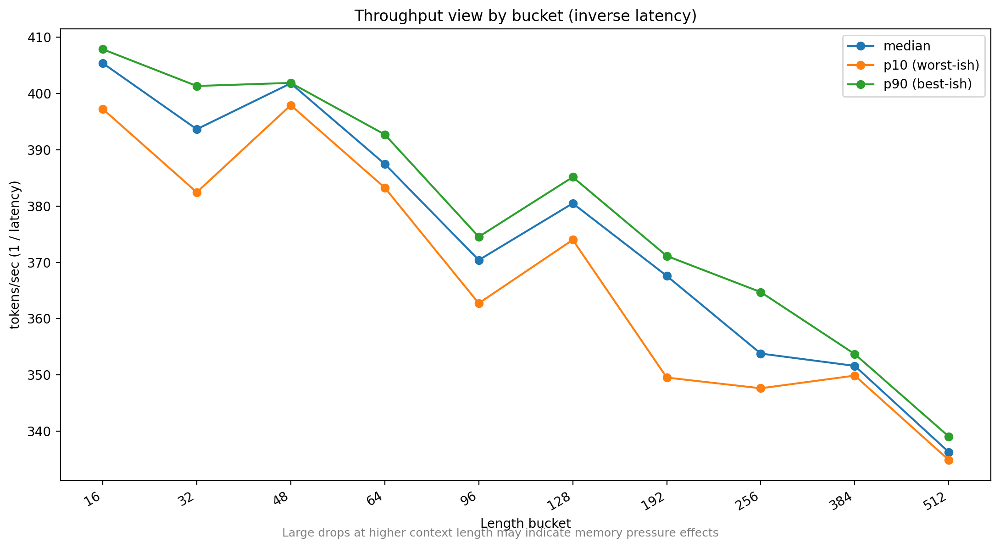
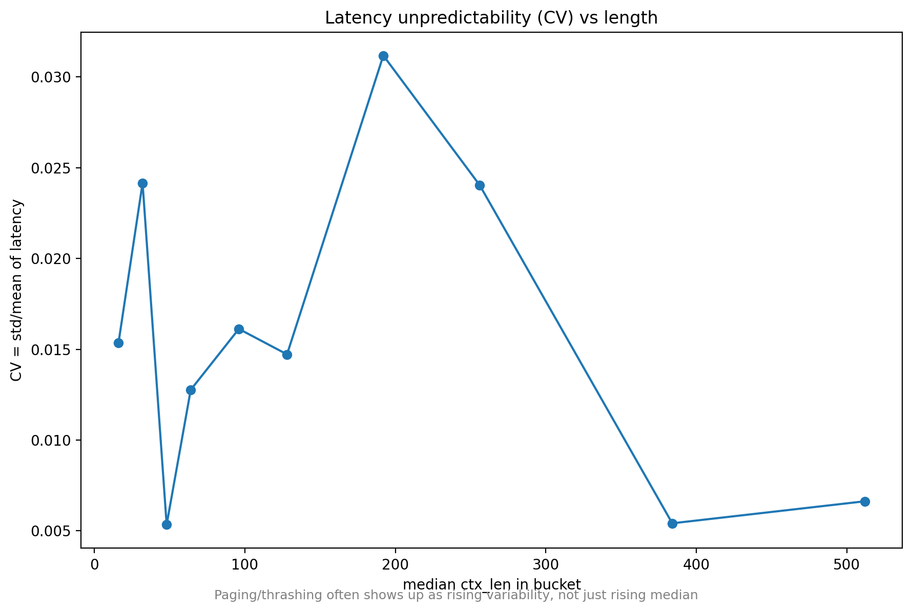

Motivation: Moving beyond raw compute speed to understand predictability and throughput stability in real-world edge deployments.
Key Takeaway: Context length is a strong driver of latency, but not the only factor at play.

"The median moves smoothly, but the tails are what matter for real systems."

Insight: Latency degradation is not uniform — it becomes probabilistic at scale.

"This is where systems start to feel ‘unreliable’ even if the average looks fine."

Conclusion: GPU compute explains most, but not all, of end-to-end latency.


Critical: Long contexts hurt both latency and total system capacity.

"Rising variability is often a better signal than rising average latency."

System forced to swap memory to disk, causing massive latency spikes.
Growing cache consumes available GPU memory, leading to fragmentation.
Overhead from finding contiguous memory blocks for large tensors.
*Analysis based on outlier clusters at max context length (Refer to Table 09)
Strictly limiting context length is necessary to improve tail latency guarantees.
For real-time edge apps, consistent performance often matters more than peak speed.
Performance validation must include p95/p99 metrics, not just averages.